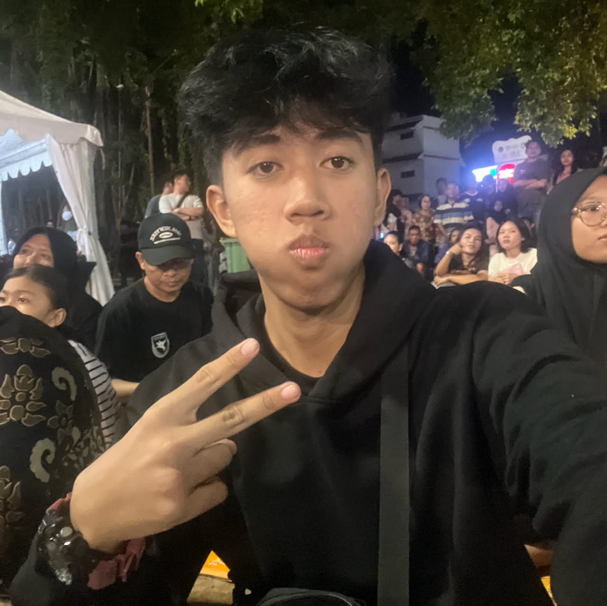

Karya : Dzaky Ramadhan A.S
Sebuah catatan tentang perjalanan, doa-doa yang diam-diam dilangitkan, serta kisah-kisah yang tumbuh dari sunyi. Mari duduk sejenak, baca pelan-pelan, dan temukan bagian dirimu di setiap halamannya.
4
Judul Novel
0
Total Bab
100%
Karya Orisinal
Pilih naskah cerita untuk membaca sinopsis lengkap dan memulai bab pertama.
Tidak ada novel yang cocok dengan kata kunci atau kategori yang Anda pilih.

Seseorang yang percaya bahwa setiap langkah kaki, hening malam, dan pertemuan tak sengaja selalu menyimpan cerita yang layak untuk dijaga. Melalui Novel Zaydhan, Dzaky Ramadhan A.S merangkai fragmen-fragmen rasa, doa-doa yang diam-diam dilangitkan, serta perjalanan panjang hati manusia dalam mencari makna pulang—berharap setiap aksara yang tertulis mampu menjadi teman duduk paling hangat bagi siapa saja yang membacanya.
"Barangkali kita tidak pernah benar-benar kehabisan kata, hanya saja ada beberapa rasa yang terlalu luas jika diucap begitu saja—maka cerita dipilih menjadi rumah paling tenang untuk menyimpannya."